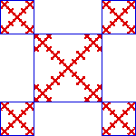

| As the right side shows, this fractal can be decomposed into
four pieces with r1 = r2 = r3
= r4 = 1/4,
and one with r5 = 1/2. |
|
 |
 |
|
| Thus the Moran equation is |
| 4⋅((1/4)d) + (1/2)d = 1. |
| Taking x = (1/2)d, we see (1/4)d = x2 and the
Moran equation becomes the quadratic equation |
| 4⋅x2 + x = 1 |
| The quadratic formula gives |
| x = (-1 ± √(17))/8 |
| Taking the positive solution for x and solving x = (1/2)d, we find |
| d = Log((-1 + √(17))/8)/Log(1/2) ≈ 1.35702 ... . |
| Do you see other decompositions of this fractal? What about five copies
scaled by 1/4 and four copies scaled by 1/8? Will the
Moran equation give the same value for the dimension?
|